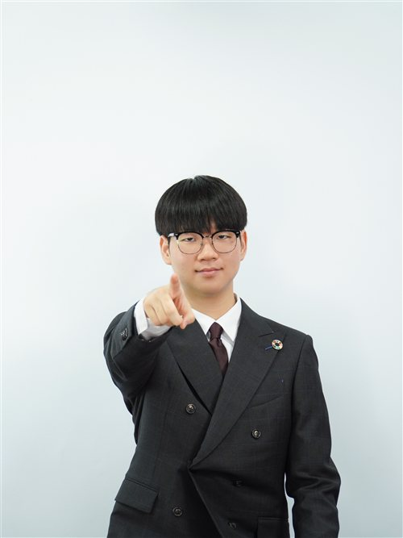
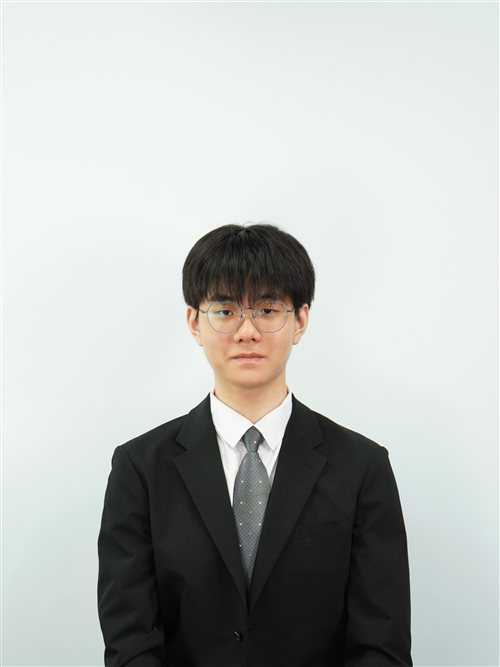
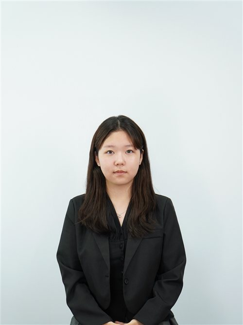

KISMUN 2026
The team that runs KISMUN from the inside.

Greetings to distinguished participants of KISMUN 2026!
My name is Hojin Han, and I will be serving as your Secretary-General throughout the conference. From the establishment of the Leadership Development Program team in 2013, KISMUN now stands as its thirteenth annual conference. Inspired by the educational value of the KIS—GloNaCal—KISMUN has been one of the school's core programs, where young minds could exchange ideas, challenge themselves, and learn that global prosperity starts with a small step. It is beyond my greatest privilege to leave a comma on the legacy that generations before myself have built.
To give you a friendly reminder, anyone, even my role models of MUN, did not start out as MUN masters. In fact, there is no "perfection" in Model UN.
The true value of MUN is raising your placard even if you think you are not ready for it.
MUN is not a stage for top debaters to dominate, but a platform where every participant, regardless of age, tenure, or experience, can discover the value of their own perspectives.
Concluding this letter, I would like to extend my wholehearted gratitude to everyone who has been a part of my MUN journey. The experiences and lessons I have gained through Model United Nations would not have been possible without the support of those around me. I am deeply grateful to each of the following individuals for guiding my journey.
Mr. Tom, thank you for being a teacher of MUN and for changing my life. I mean it.
Mrs. Sunjae, thank you for letting me know that there are greater values than academic success.
Taeoh, thank you for being my very first chair and Secretary-General, as well as the greatest mentor of MUN and school life.
Sumin, thank you for your kind support and feedback which made me bolder.
Seoyoung, thank you for believing in my potential when I was just starting out.
Euna, thank you for making KISMUN 2025 the best conference I've ever experienced.
Eunseo, thank you for your kind smiles and warm words you've shown to LDP members.
Dongwon, thank you for being the funniest tuna I've ever seen.
Serin, thank you for being the best co-chair I've ever worked with.
All past LDP members who are not mentioned above — Anna, Jeongtae, Jiyoung, Chaehyun, Hyoryoung, Yeonseon, Jiwoo, Siwoo(s), Yubin, Kaeul, and Jua — thank you for being seniors I looked up to throughout my MUN journey.
Finally, current LDP members — Yuchan, Yujin(s), Jeongmin, Janghyun, Hyoseok, Seeyoung, Hojung, Sohyun, Bona, Jeongin, Sion, Hyomin, Yewon, Sunjung, Siwon, and Jiwon — thank you for making MUN the most meaningful chapter of my life.
Once again, to everyone who has been part of this story, thank you. My own position of Secretary-General is never a result of my effort alone, but of the trust and support I have received from so many great people.
As a closing remark, I genuinely hope that KISMUN 2026 will become a conference where every delegate finds the confidence that their voice matters.
Sincerely yours,
Hojin Han
Secretary-General
KISMUN 2026

Honorable chairs, esteemed delegates, respected directors, and distinguished guests.
My name is Yuchan Moon, and it's my greatest honor to serve you as a Deputy Secretary General of KISMUN 26'
I would like to begin my letter by sharing the idea that has guided every hour of our preparation. Over the past months, the entire Secretariat, LDP, Directors, and staff members have worked tirelessly to prepare for KISMUN. Throughout this period, we have continuously witnessed various global issues: the conflict following the 2026 U.S.–Israeli strikes on Iran, the escalating tariff wars straining the global economy, and the unresolved debate over how to govern artificial intelligence.
All these problems stem from a single root, a lack of communication and negotiation.
This year, our conference starts from a simple but powerful idea: 'Value Your Voice, Voice Your Value'. I believe that every single delegate, even the student who was signed up by their parents, carries a perspective that no one else can replace. And once you recognize that your idea holds worth, you also take on the responsibility of turning the idea into a voice. When productive voices are gathered from every delegate, real diplomacy takes shape, and effective solutions to global agendas that once seemed impossible begin to appear. On behalf of the KISMUN 26' DSG, I welcome you warmly, and I cannot wait to see the value each of you will bring to the floor! See you at KISMUN!
Best Regards,
Yuchan Moon
Deputy Secretary-General
KISMUN 2026

Honorable chairs, fellow delegates, and respected staff members,
I am Yujin Jeong, and I'm truly honored to serve as the Deputy Secretary General of this year's KISMUN and to welcome you all.
Let me ask you a simple question: what makes an amazing delegate? You may think about critical thinking, clear speeches, or fluent English. What matters the most, though, is your passion. If you have the passion, the kind of passion that gives you the courage to jump over your limit every day, you are already an enthusiastic delegate. MUN will not always be kind to you. Throughout your MUN story, there will be days when you feel overwhelmed, afraid, and upset. For me as well, speaking in front of delegates used to be my biggest fear. But instead of focusing on perfection, I began to value the little progress I made every day. I tried to overcome my fear by performing better than I did yesterday with passion.
Never forget this:
You don't need to be perfect.
When you challenge yourself with passion, your voice finds its value, and you begin to value your own voice.
I would also like to thank everyone who made KISMUN 2026 possible. Thank you for your unwavering support, Mr Tom and Ms Uh Jin Lim. My fellow secretariat members, LDP, and staff members, thank you all for your hard work and dedication during the entire year in preparation for this conference. I was super lucky to work alongside all of you!
Before I end, to all the delegates attending KISMUN 26, make this conference yours. Speak with passion, never be afraid of making mistakes and let your voice be heard. Because in the end, passion defines a great delegate. You got this, you will make it, and I believe in you!
Best regards,
Yujin Jeong
Deputy Secretary-General
KISMUN 2026